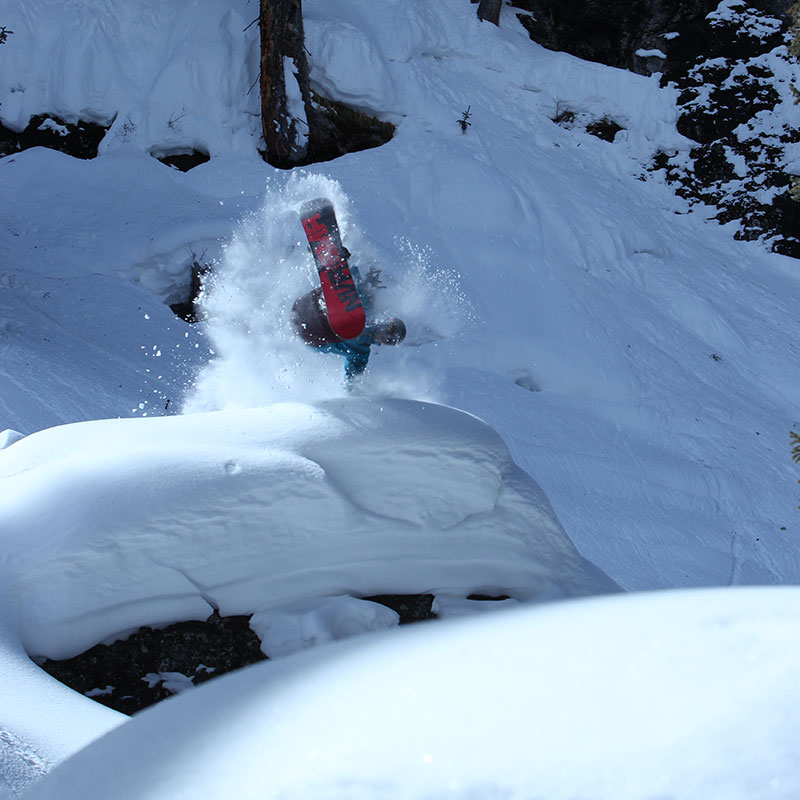

<div id="content">
  <div id="main">
    <div class="container">
      <div class="one_third">
        
      </div>

      <div class="two_third last">
						<h1>Austin Gibney</h1>
						<div><span style="font-family: Helvetica;"><a href="https://youtu.be/4_UpOmIgukc">CLICK HERE TO SEE AUSTIN RIDE</a></span>
						</div>
						<div><strong><br /></strong>
						</div>
						<div><strong style="font-family: Helvetica;">MEET AUSTIN...<span>&nbsp;</span></strong><span>Grew up on the east coast but moved to Colorado as soon as I could. I love being on adventures in the mountains, and snowboarding has allowed me to enjoy     them the most.</span>
						</div>
						<div>
							<br />
						</div>
						<div><strong style="font-family: Helvetica;">AUSTIN'S FAVORITE NS BOARD IS...&nbsp;</strong><span>The Ripsaw- because I want one board that can handle any type of riding no matter conditions or terrain. (really I'm lazy and don't want to change bindings from one board to another). The Ripsaw Profile is perfect- the rocker helps you float in pow but the camber feels secure carving and gives you that extra pop when you want it. It can handle AK lines or mini shred around the resort. The twin shape not only helps with riding switch but also nice to have that tail for landings and going fast through heavy snow and chunder.&nbsp;</span>
						</div>
					</div>
      <hr>
  </div>
</div>